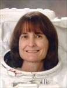

Lyndon B. Johnson Space Center
Houston, Texas 77058
|
National Aeronautics and Space Administration Lyndon B. Johnson Space Center Houston, Texas 77058 |
 |
Biographical Data |
||
Linda M. Godwin (Ph.D.)
NASA ASTRONAUT (FORMER)
PERSONAL DATA: Born July 2, 1952, in Cape Girardeau, Missouri. Her hometown is Jackson, Missouri. Married to Steven R. Nagel of Houston, Texas. Two daughters.
EDUCATION: Graduated from Jackson High School in Jackson, Missouri, in 1970; received a bachelor of science degree in mathematics and physics from Southeast Missouri State in 1974, and a master of science degree and a doctorate in physics from the University of Missouri in 1976 and 1980.
ORGANIZATIONS: Member of the American Physical Society, the Ninety-Nines, Inc., Association of Space Explorers, Aircraft Owners and Pilots Association.
SPECIAL HONORS: Recipient of NASA Outstanding Performance Rating, Sustained Superior Performance Award, and Outstanding Leadership Medal, NASA Exceptional Service Medal, NASA Distinguished Service Medal.
EXPERIENCE: After completing undergraduate studies in physics and mathematics at Southeast Missouri State University, Dr. Godwin attended graduate school at the University of Missouri in Columbia, Missouri. During that time she taught undergraduate physics labs and was the recipient of several research assistantships. She conducted research in low temperature solid state physics, including studies in electron tunneling and vibrational modes of absorbed molecular species on metallic substrates at liquid helium temperatures. Results of her research have been published in several journals.
Dr. Godwin is an instrument rated private pilot.
NASA EXPERIENCE: Dr. Godwin joined NASA in 1980, in the Payload Operations Division, Mission Operations Directorate, where she worked in payload integration (attached payloads and Spacelabs), and as a flight controller and payloads officer on several Shuttle missions.
Selected by NASA as an astronaut candidate in June 1985, Dr. Godwin became an astronaut in July 1986. Her technical assignments have included working with flight software verification in the Shuttle Avionics Integration Laboratory (SAIL), and coordinating mission development activities for the Inertial Upper Stage (IUS), deployable payloads, and Spacelab missions. She also has served as Chief of Astronaut Appearances, Chief of the Mission Development Branch of the Astronaut Office and as the astronaut liaison to its Educational Working Group, Deputy Chief of the Astronaut Office, Deputy Director, Flight Crew Operations Directorate, Chief of the Astronaut Office CAPCOM Branch, and Assistant to the Director for Exploration, Flight Crew Operations Directorate at the Johnson Space Center.
A veteran of four space flights, Dr. Godwin has logged over 38 days in space, including over 10 EVA hours in two spacewalks. In 1991 she served as a Mission Specialist on STS-37, was the Payload Commander on STS-59 in 1994, flew on STS-76 in 1996, a Mir docking mission, and served on STS-108/International Space Station Flight UF-1 in 2001.
Dr. Godwin retired from NASA in August 2010.
SPACE FLIGHT EXPERIENCE: STS-37 Atlantis (April 5-11, 1991) was launched from the Kennedy Space Center, Florida, and returned to land at Edwards Air Force Base, California. During the 93 orbits of the mission, the crew deployed the Gamma Ray Observatory (GRO) to study gamma ray sources in the universe. GRO, at almost 35,000 pounds, was the heaviest payload deployed to date by the Shuttle Remote Manipulator System (RMS). The crew also conducted an unscheduled space walk to free the GRO high gain antenna, and conducted the first scheduled extravehicular activity in 5-1/2 years to test concepts for moving.
about large space structures. Several middeck experiments and activities were conducted including test of elements of a heat pipe to study fluid transfer processed in microgravity environments (SHARE), a chemical processing apparatus to characterize the structure of biological materials (BIMDA), and an experiment to grow larger and more perfect protein crystals than can be grown on the ground (PCG II). Atlantis carried amateur radio equipment for voice contact, fast scan and slow scan TV, and packet radio. Several hundred contacts were made with amateur radio operators around the world. Mission duration was 143 hours, 32 minutes, 44 seconds.
STS-59 Endeavour (April 9-20, 1994) was the Space Radar Laboratory (SRL) mission. SRL consisted of three large radars, SIR-C/X-SAR (Shuttle Imaging Radar C/X-Band Synthetic Aperture Radar), and a carbon monoxide sensor that were used to enhance studies of the Earth's surface and atmosphere. The imaging radars operated in three frequencies and four polarizations. This multispectral capability of the radars provided information about the Earth's surface over a wide range of scales not discernible with previous single-frequency experiments. The carbon monoxide sensor MAPS (Measurement of Air Pollution by Satellite) used gas filter radiometry to measure the global distribution of CO in the troposphere. Real-time crew observations of surface phenomena and climatic conditions augmented with over 14,000 photographs aided investigators in interpretation and calibration of the data. The mission concluded with a landing at Edwards AFB after orbiting the Earth 183 times in 269 hours, 29 minutes.
STS-76 Atlantis (March 22-31, 1996) was the third docking mission to the Russian space station Mir. Following rendezvous and docking with Mir, transfer of a NASA astronaut to Mir for a 5-month stay was accomplished to begin a continuous presence of U.S. astronauts aboard Mir for the next two year period. The crew also transferred 4800 pounds of science and mission hardware, food, water and air to Mir and returned over 1100 pounds of U.S. and ESA science and Russian hardware. Dr. Godwin performed a six-hour spacewalk, the first while docked to an orbiting space station, to mount experiment packages on the Mir docking module to detect and assess debris and contamination in a space station environment. The packages will be retrieved by a future shuttle mission. The Spacehab module carried in the Shuttle payload bay was utilized extensively for transfer and return stowage of logistics and science and also carried Biorack, a small multipurpose laboratory used during this mission for research of plant and animal cellular function. This mission was also the first flight of Kidsat, an electronic camera controlled by classroom students via a Ku-band link between JSC Mission Control and the Shuttle, which uses digitized photography from the Shuttle for science and education. The STS-76 mission was accomplished in 145 orbits of the Earth, traveling 3.8 million miles in 221 hours and 15 minutes.
STS-108 Endeavour (December 5-17, 2001) was the 12th shuttle flight to visit the International Space Station. Endeavour’s crew delivered the Expedition-4 crew and returned the Expedition-3 crew. The crew unloaded over 3 tons of supplies, logistics and science experiments from the Raffaello Multi-Purpose Logistics Module and repacked over 2 tons of items no longer needed on the station for return to Earth. Dr. Godwin used the Shuttle’s robotic arm to install the MPLM onto the Station Node, and participated in a space walk to wrap thermal blankets around ISS Solar Array Beta Gimbal Assemblies. STS-108 was accomplished in 185 Earth orbits, traveling 4.8 million miles in 283 hours and 36 minutes.
AUGUST 2010
This is the only version available from NASA. Updates must be sought direct from the above named individual.